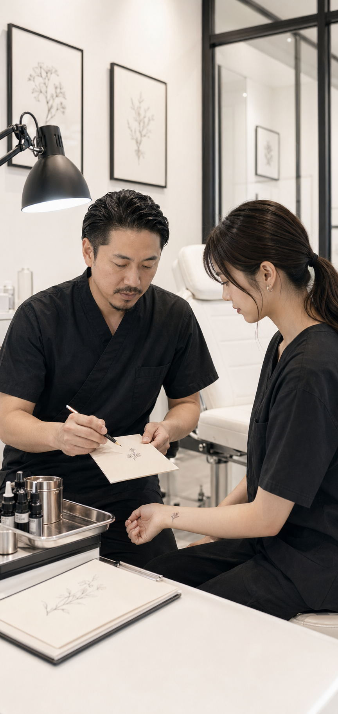
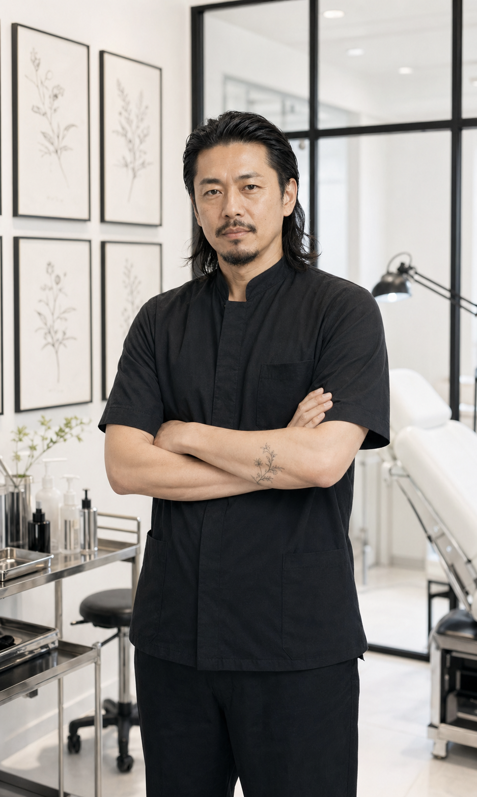

— 01
インバウンド需要が急拡大
訪日外国人がタトゥーを目的に来日するケースが急増。東京は今や世界有数のタトゥースポットとして注目を集めています。
Painless Tattoo School — est. 2018
東京・上野で月1,000人以上を迎える
Painless Tattoo Studio が、現場の知見をそのまま伝える
少人数スクールを開いています。
24時間以内に返信 · 相談無料 · 強引な勧誘はしません

現役スタジオが運営するスクール ABOUT US
東京・上野に160席を構え、40名以上のアーティストが在籍するハイレベルなタトゥースタジオ。月間1,000人以上が訪れる、日本有数の規模を持つ現役スタジオです。
このスクールはそのスタジオが直営で運営しています。「教室」ではなく「現場」で学べる——それがPainless Tattoo Schoolの最大の特徴です。
タトゥーをとりまく環境は大きく変わりました。技術を持つ彫り師の市場価値は、いま確実に高まっています。
訪日外国人がタトゥーを目的に来日するケースが急増。東京は今や世界有数のタトゥースポットとして注目を集めています。
20〜30代を中心に、自己表現の手段としてタトゥーを選ぶ人が急速に増えています。社会的認知も着実に変わりつつあります。
生身の人間の肌に施術する技術は、テクノロジーが進化しても機械やAIには代替できません。手に職をつけるなら今が最適です。
熟練した彫り師の施術単価は1件3〜10万円以上も珍しくありません。月20件なら月収100万円以上も現実の目標になります。
「彫り師になりたい」と思っても、越えなければならない5つの壁があります。多くの人がここで数年を無駄にしています。
単に「絵が上手い」だけでは不十分。肌の上で破綻なく機能するデザインを設計する力は、独学では体系的に身につきません。
マシン・針・インク・衛生管理の誤った知識は仕上がりだけでなく健康被害に直結します。独学で安全に補える知識ではありません。
タトゥーは実践練習が命。しかし自分の施術を受けてくれる相手を見つけるのは至難の業。経験値が積めないまま時間だけが過ぎていきます。
何が正しいかわからないまま手を動かし続け、誤った癖が定着してしまうケースも。独学では修正のタイミングが遅れがちです。
日本では彫り師になるために弟子入りを選ぶ人が多くいます。しかしその実態は「無給で最低1〜3年間」の修行。
※実際には生活費も必要。さらに実践機会が少なく、デビューまでの期間は読めません。
この5つの壁を、最短距離で越えるために。
Painless Tattoo Schoolが選ばれる5つの理由。教室ではなく、現役で稼働するスタジオで学ぶからこそできることがあります。
第一線で活躍するプロ彫り師が指導。教科書ではなく、現場で生まれた実務カリキュラムだから技術と現場感覚の両方が身につきます。
Painless Tattoo Studioのブースをそのまま練習環境として使用。月1,000人以上が来店する「本物の現場」で手を動かすから、上達スピードが違います。
大人数のスクールでは得られない、マンツーマンに近い指導密度。わからないことをその場で聞けて、講師の目が一人ひとりに届きます。
技術習得だけでなく、独立・フリーランスとして活動するためのSNS運用・ブランディング・集客の基礎も指導。卒業後も食べていける力をつけます。
卒業がゴールではありません。デビュー後6ヶ月間は技術・施術・集客に関する質問を随時受付。Painless Studioのネットワークで所属・独立もサポートします。

「独学で2年間試みて挫折しかけていた私が、6ヶ月でデビューできるとは思っていませんでした。現場のスタジオで学ぶ経験は他のスクールでは絶対に得られないと思います。」
「少人数制だから、わからないことをその場で聞ける。SNS集客の講義が特に役立って、今はInstagramから毎月コンスタントに予約が入るようになりました。」
「仕事をしながら週2回通いました。卒業後も6ヶ月間質問できる環境があったのが心強かった。今は月20件以上の予約が入っていて、副業から独立できました。」
画力 → 機材・衛生 → 練習皮膚 → 実技 → マーケティング・デビュー準備まで、段階的にステップアップ。週2回の通学で、半年で現場に立てる水準まで引き上げます。
弟子入り・他スクール・独学——Painless Tattoo Schoolの優位性を正直に比較します。
| Painless Tattoo School |
弟子入り | 大手スクール | 独学 | |
|---|---|---|---|---|
| デビューまでの期間 | ◎最短6ヶ月 | ✕1〜3年以上 | △1〜2年 | ✕不明 |
| 費用の透明性 | ◎明確な料金体系 | ✕無給で年220万円相当を失う | ○明確だが高額 | ○機材費のみ |
| 指導形式 | ◎定員6名の少人数 | △1対1だが雑用が多い | ✕大人数・画一的 | ✕指導なし |
| 実践環境 | ◎現役スタジオで実習 | △師匠次第 | △練習皮膚のみが多い | ✕自力で確保が必要 |
| 集客・SNS支援 | ◎カリキュラムに含む | ✕なし | ✕ほぼなし | ✕なし |
| 卒業後サポート | ◎6ヶ月間サポート | △師匠との関係次第 | △スクールによる | ✕なし |
Painless Tattoo Studio に在籍するアーティストが、講師として直接あなたを指導します。

15年以上、上野と海外を行き来しながら活動。リアリズム・ジャパニーズの両方を手がけ、海外コンベンション受賞歴多数。これまでに2,000件以上の施術実績を持ち、現場で通用する技術を体系化することを得意としています。現在もPainless Tattoo Studioで現役として活動中。
いずれも分割払い対応（最大24回）。LINEで無料カウンセリング後、最適なコースをご提案します。
¥280,000/ 全3ヶ月
¥580,000/ 全6ヶ月
¥980,000/ 全12ヶ月
ここに無いご質問は、LINEからお気軽にどうぞ。
まだ迷っている方へ — まず話を聞くだけでも大丈夫です。
無料カウンセリングを予約する